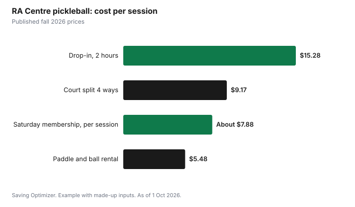

Sports · Canada
Pickleball on a Budget: A Canadian Cost Guide
Pickleball is cheap to start: rent or borrow a paddle, join a drop-in, and split court rentals four ways. As a published reference, the RA Centre in Ottawa charges $15.28 including tax for a two-hour all-level drop-in session, $36.68 including tax to rent a court for an hour (about $9.17 each for four players), and $5.48 plus tax to rent a paddle and ball. Its four-week Intro to Pickleball clinic is $131.40 plus tax with paddles and balls supplied. Buy a paddle only once you know you will keep playing, and compare drop-in with membership by cost per session.
Key takeaways
- Start with a rented or borrowed paddle; the RA rents a paddle and ball for $5.48 plus tax.
- RA court rental: $36.68 an hour including tax, up to 5 players; about $9.17 each for four.
- RA all-level drop-in: $15.28 per two-hour session including tax, adults 18+.
- RA intro clinic: 4 weeks for $131.40 plus tax, equipment supplied.
- Seasonal memberships pay off only with steady weekly attendance.
- Example with made-up inputs: a first season costs $422, or about $292 without the clinic.
Paddles
Paddles range from basic wooden or composite models to high-end carbon paddles. A beginner does not need an expensive paddle; control and comfort matter more than power at first. Try several by renting or borrowing before buying. If you plan to play in sanctioned tournaments, check that the paddle is on the governing body's approved list. Balls differ for indoor and outdoor play, so buy the type for where you play.
| Item | Need it at first? | Notes |
|---|---|---|
| Paddle | Rent or borrow first | Buy once you know your preferred weight and grip |
| Balls | Often supplied at clinics | Indoor and outdoor balls differ |
| Court shoes | Yes | Non-marking soles for indoor courts |
| Eye protection | Recommended | The RA asks drop-in players to bring eyewear |
| Bag | No | Any backpack works |
Drop-ins
Drop-in sessions are the easiest way to meet players and play without a partner. At the RA, the All Level Play drop-in runs two-hour sessions on set weekday times for adults 18 and older, costs $15.28 including tax, and requires pre-booking, with bookings opening three days in advance. A volunteer ambassador uses a randomizer to form foursomes and reshuffles after every game, which is played to 12 minutes. Players bring their own paddle, ball and eyewear. The RA also runs novice drop-ins for players rated 2.0 to 2.9 who already know the rules.
| Item | Price |
|---|---|
| All Level Play drop-in, 2 hours | $15.28 including tax |
| Court rental, Pickleball Centre, 1 hour | $36.68 including tax |
| Court rental, West Gym, 1 hour | $30.94 including tax |
| Paddle and ball rental | $5.48 plus tax |
Community centres in many cities also run pickleball drop-ins in gyms, and some are free; at Toronto's free centres, all City-delivered drop-in programs are free. Outdoor courts in parks can be free in warmer months. See city recreation passes and fee help.
Indoor courts
Court rental makes sense for a group of four who want to play together. At the RA, one person books and pays the full court fee, courts can be booked by the hour, up to five players are allowed per court including a spare, and a maximum of two consecutive bookings is allowed. Cancellation rules matter: cancelling less than 48 hours ahead earns no credit or refund, and cancelling earlier gives an account credit only.
| Players | Pickleball Centre, $36.68 | West Gym, $30.94 |
|---|---|---|
| 2 | $18.34 | $15.47 |
| 4 | $9.17 | $7.74 |
| 5 (with a spare) | $7.34 | $6.19 |
Clubs
Clubs and centres offer clinics, leagues and seasonal memberships. The RA's Intro to Pickleball Level 1 is a four-week clinic with one hour of coaching a week, covering basic shots, rules and equipment, at $131.40 plus tax with paddles and balls supplied. Its 2026/27 social seasonal memberships run from September to June with a two-week break over the holidays, and give designated weekly two-hour timeslots for organized recreational play. Several options were sold out as of 1 October 2026.
| Option | Sessions | Fee |
|---|---|---|
| Monday and Wednesday mornings | Two 2-hour sessions a week | $575.53 |
| Tuesday and Thursday | Two 2-hour sessions a week | $614.95 |
| Saturday | One 2-hour session a week | $307.48 |
To compare a membership with drop-ins, divide by the sessions you will attend. The Saturday membership covers about 39 Saturdays from September to June after the listed breaks; at $307.48 plus tax that is about $7.88 a session before tax if you attend every week, against $15.28 including tax for a drop-in. Miss half the sessions and the cost per session doubles. The RA notes that membership sessions do not guarantee continuous play or skill-matched games.
Leagues and ratings
Once you play regularly, leagues give guaranteed games against players at your level, usually for a set fee over several weeks. Many leagues use skill ratings, and the RA runs group rating sessions for players who want to join its leagues but are unsure of their rating. Its novice drop-ins are aimed at players rated 2.0 to 2.9. A rating helps you find balanced games, which often matters more for enjoyment than the price. Before joining a league, ask how many weeks it runs, whether you need a partner, and what happens if you miss a week, then work out the cost per game the same way as for memberships.
| Format | Best for | Cost driver |
|---|---|---|
| Drop-in | New players, flexible schedules | Per session |
| Court rental | A regular group of four | Split per player |
| Clinic | Learning the basics | Per course |
| Seasonal membership | Steady weekly players | Sessions attended |
| League | Competitive, rated players | Per game over the season |
Example with made-up inputs: a first season
These numbers are an example with made-up inputs. They are not RA or any club's prices. A new player takes a four-week intro clinic for $130, then plays 10 drop-ins at $15 each, $150. They buy a mid-range paddle for $60 and indoor balls for $10, and split eight court rentals four ways at $9 each, $72. The first season costs about $422; skipping the clinic and learning at drop-ins would bring it to about $292.
| Item | Cost |
|---|---|
| Intro clinic | $130 |
| Drop-ins, 10 at $15 | $150 |
| Paddle | $60 |
| Balls | $10 |
| Court share, 8 at $9 | $72 |
| Total | $422 |

Plan
- Try a drop-in or intro clinic with a rented paddle.
- Find three regular partners to split court rentals.
- Check free community centre and outdoor options.
- Compare drop-ins with membership by cost per session you will attend.
- Buy a paddle once you know what you like.
- Read cancellation rules before booking courts.
For other racquet sports in winter, see indoor tennis.
Sources
- RA Centre, Pickleball, racentre.com, as of 1 Oct 2026. Court rental fees and rules, equipment rental, drop-in sessions and fees, intro clinic, seasonal memberships and dates, 9.5% facility renewal fee.
- City of Toronto, Free and Lower-Cost Recreation Options, toronto.ca, as of 1 Oct 2026. Free centres offer City-delivered drop-in programs free.
- The session count for the membership comparison is estimated from the RA's listed dates and breaks.
- The clinic, drop-in, paddle, ball and court amounts in the example are an example with made-up inputs.
Frequently asked questions
How much does it cost to play pickleball?
It varies by city. At the RA Centre in Ottawa, a two-hour all-level drop-in is $15.28 including tax and a one-hour court rental is $36.68 including tax, about $9.17 each for four players, as of fall 2026.
Do I need to buy a pickleball paddle?
Not at first. Rent or borrow one; the RA rents a paddle and ball for $5.48 plus tax, and its intro clinics supply equipment.
Is a pickleball membership worth it?
Only with steady attendance. Divide the membership by the sessions you will actually attend and compare with the drop-in price.
Are there free places to play pickleball?
Some. Outdoor park courts can be free in warmer months, and some community centres run free drop-ins, such as programs at Toronto's free centres.
What are typical court rental rules?
At the RA, one person books and pays, up to five players per court, a maximum of two consecutive hours, and no credit for cancellations under 48 hours.
Researched and drafted with AI assistance and fact-checked against official Canadian sources. How we create content.
Disclosure: Saving Optimizer may earn a commission if a partner link is added later, such as a sporting goods offer type. No partnership is claimed on this page, and no product or club is ranked. Education only.